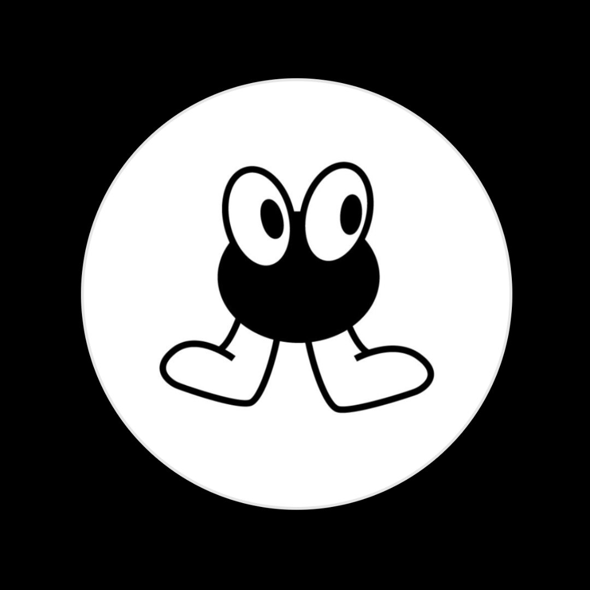

More projects
Here are some other works that are equally interesting :
- Popul’Art : As part of a work on e-reputation, we had to create a media platform and post major and minor content. For our part, we chose to talk about pop culture from all angles (fashion, music, commitments, etc.). Our media is called Popul'Art. 
- Digital Inclusivity : This is the biggest project of our third year. The goal was to create a data visualization exhibition focusing on a specific theme: digital inclusivity. Racism, gender, or disability, for example - each person had a sub-theme to address, as well as a pole to create the vernissage and permanent exhibition (graphic design, partnerships, communication, etc.).
- Video clip ("STORY.") : Starting from a single I had already produced, I decided to shoot a music video and edit it on Final Cut Pro X. Throughout the video, the shots alternate between me singing in a car and other scenes of a romantic date. At the end of the clip, it becomes clear that the scenes in the car and the romantic date are just a product of my imagination. The clip ends at the beginning of the date.
- Information Architec Website : My first HTML/CSS site was about information architect Peter Morville. You can find it below.
- Specific Gallery : Throughout the project, we had to create a specific gallery. This involved sorting documentary resources using keywords.